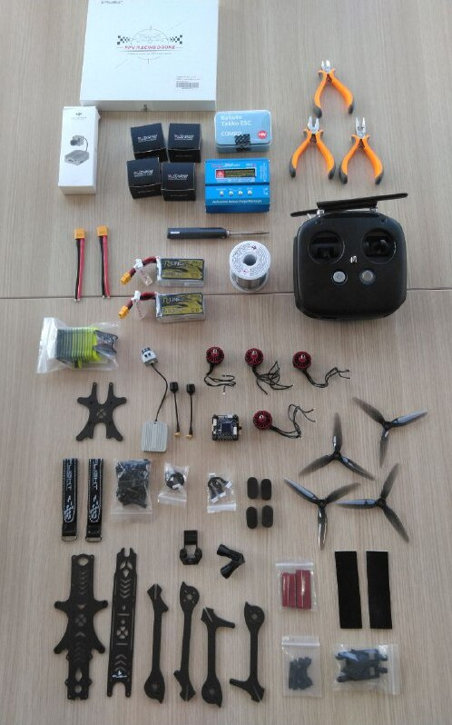

FPV Drones
Drones have become very popular in the recent years. Different types of drones are used for various areas. Maybe one of the coolest type is the FPV drones. FPV stands for first person view. As the name suggests, it is a kind of experience like seeing the world in the eyes of the drone.
The whole operation is quite complex but not impossible with the current technology. A tiny camera is placed at the head of the drone with a proper angle and the video is instantly sent to the googles of the pilot through the transmitter. The pilot decides movement by watching instant footage video and perform flight control commands through controller. The control commands are sent to drone through the transmitter of the controller and the speed of the motors are instantly updated to apply the maneuver that the pilot wants.
After I decided to build my own FPV drone, the first thing I do is collecting the necessary components like frame, motor, controller, googles, propellers etc.
